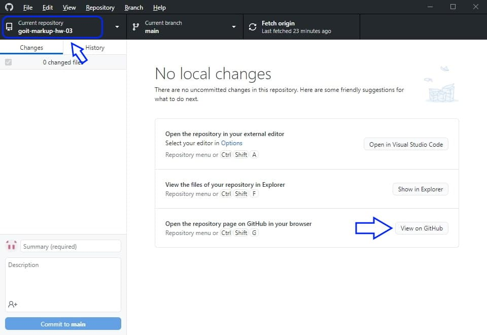

Легке створення нового репозиторію у GitHub на базі іншого та клонування його на робочю станцію
-

Відкримаємо GitHub Desktop та обераємо репозиторій на основі якого потрібно створити новий репозиторій.
Натискаємо на кнопку Open in GitHub.
GitHub Desktop - закриваємо -
На сайті GitHub вибираємо пунк меню Settings
-

Активуємо галочку у пункті General -> Template repository
-

Створюємо новий репозиторій
-
Вибираємо у полі Template репозиторій на базя якого ми створюємо новий репозиторій.
Пишемо назву нашого нового репозиторію -
Відкриваємо GitHub Desktop. File, Clone Repository
-
Все. Репозиторій створено та скопійовано на робочу станцію.
Тискнемо на клавішу Open in Visual Studio Code і працюємо з новим репозиторієм